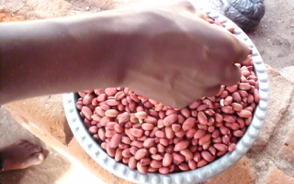
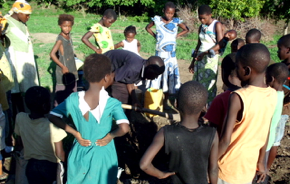
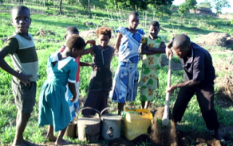
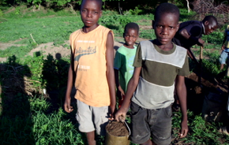
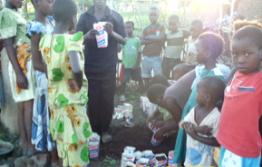
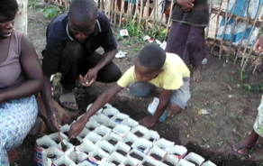
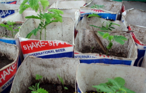
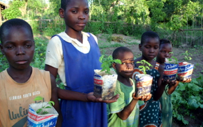
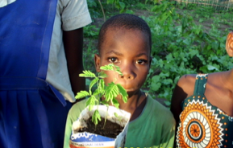

Malawi hat die zweithöchste Waldrodungsrate in Afrika und die vierthöchste auf der ganzen Welt. Damit es in Malawi auch in Zukunft noch Wald gibt, ist es wichtig, neue Bäume zu pflanzen.
Josephy hat zusammen mit den Lehrern und den Kindern bereits fleissig Samen gesammelt und diese in Behälter gepflanzt. Das Ziel war es, bis Ende Januar 1000 Behälter zu bepflanzen, damit diese in der nächsten Regensaison im Dezember gesetzt werden können. Bis dahin werden die Setzlinge von den Kindern und Lehrern gepflegt, damit diese genügend gross werden.
Den Kindern wird gleichzeitig beigebracht, wie wichtig es ist, zu der Natur und Umwelt Sorge zu tragen.
|  |  |  |
|  |  |  |
|  |  |  |